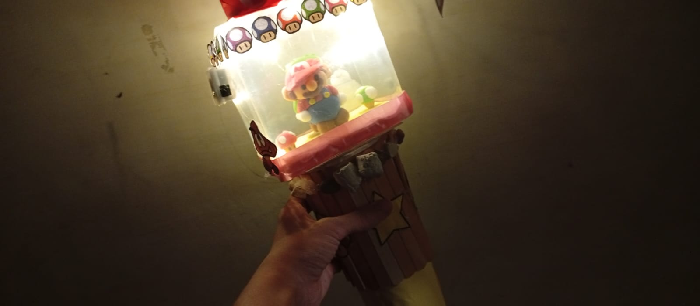

Proyek DIY
Proyek terbaru saya: lightstick bertema karakter game klasik yaitu mario dengan lampu hias yang menyala terang
kerajinan tangan berbentuk lightstick bertema Super Mario yang sedang dipegang di dalam ruangan dengan pencahayaan minim. Objek ini memancarkan cahaya hangat dari bagian dalam wadahnya.
Bagian atas lightstick menggunakan wadah bening berbentuk tabung sebagai tempat bagi miniatur karakter di dalamnya. Di dalamnya, terdapat figur Mario berseragam khas yang diterangi oleh lampu tersembunyi.
Tutup wadah bagian atas dihiasi oleh deretan gambar jamur beraneka warna yang dipasang melingkar. Hiasan ikonik ini memberikan sentuhan dekoratif khas dunia permainan klasik.
Bagian gagang dirancang menyerupai struktur kayu silinder lengkap dengan pola garis-garis vertikal. Pada sisi gagangnya, terdapat ornamen bintang kuning yang mempercantik tampilan luar.
Gagang lightstick ini digenggam erat oleh tangan, menunjukkan ukurannya yang pas dan nyaman dibawa. Bagian bawahnya dilapisi material warna kuning yang memberikan kontras menarik.
Karya ini menunjukkan kreativitas tinggi dalam merakit bahan sederhana menjadi lightstick yang unik. Perpaduan lampu dan hiasan Mario menjadikannya sebuah karya seni kriya yang sangat menarik.
Melalui proses pembuatan proyek ini, saya belajar banyak hal mulai dari merakit struktur fisik hingga menata komponen lampunya. Hasil akhir karya ini membuat saya semakin bersemangat untuk mencoba ide-ide kerajinan tangan kreatif lainnya di masa mendatang.